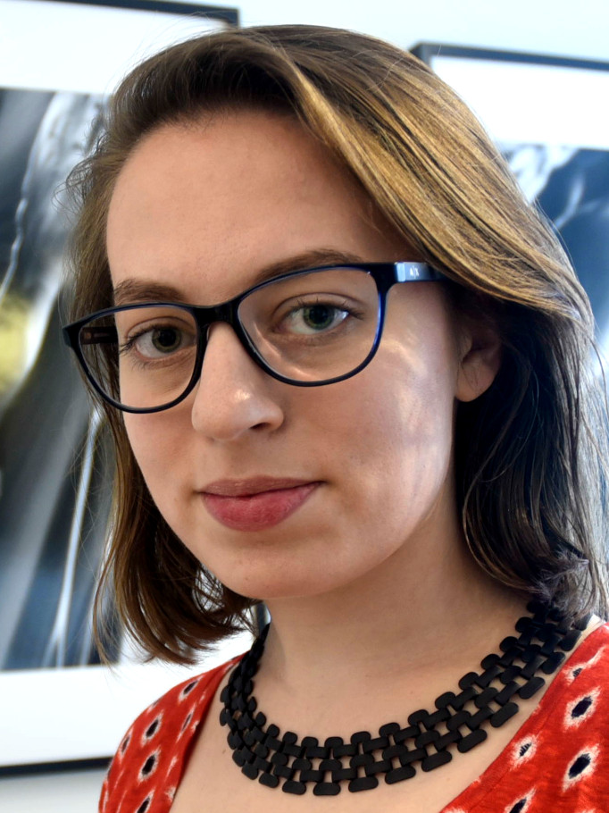

Amy Lowitz
Postdoctoral Scholar
lowitz AT uchicago dot edu
ERC 437
University of Chicago
Kavli Institute for Cosmological Physics
Eckhardt Research Center
5640 S Ellis Ave
Chicago, IL 60637
Education
University of Wisconsin - Madison, Physics PhD, 2010-2016
Brown University, Physics ScB, 2005-2009
Curriculum Vitae
- PDF (last updated 3/2018)
Of Public Interest
Current Research
I am currently a postdoctoral scholar at the Univeristy of Chicago in the Kavli Institute for Cosmological Physics. I work
in the South Pole Telescope (SPT) collaboration, primarily on warm and cold digital frequnecy multiplexed (dfMux)
readout and detector testing. I am additionally working on development of a sub-Kelvin SQUID architecture for
dfMux.
PhD Research
I am interested in Kinetic Inductance Detectors (KIDs) as candidate
detectors for future Cosmic Microwave Background telescopes, including
QUBIC. My PhD work focused
on developing a prototype array for a 100 GHz lumped, direct-absorbing KID for CMB polarimetry.
I designed the array using an EM simulation software and semi-analytic calculations, fabricated prototype arrays
in the Detector Development Laboratory cleanroom facility at NASA Goddard, and tested
the arrays in our ADR-cooled laboratory cryostat with our novel 100 GHz window-free,
vacuum waveguide feedthrough-free optical coupling scheme. I demonstrated the first optical response in a KID
at or below 100 GHz. A copy of my dissertation can be found here:
Kinetic Inductance Detectors for CMB
Polarimetry at 100 GHz.
Experience
- Postdoctoral Scholar, University of Chicago Kavli Institute for Cosmological Physics, 2017-Present
- Working on readout, detector testing, and polar operations with the South Pole Telescope
- South Pole Telescope, Winterover Telescope Engineer, 2016
- On-site telescope operation and maintenance at the Amundsen-Scott South Pole Station
- University of Wisconsin - Madison, Timbie Lab, PhD research, 2010-2016
- Kinetic inductance detectors for 100 GHz CMB polarimetry
- MIT Lincoln Lab, Radar Engineer, 2009-2010
- Machine learning, computer vision, algorithm development
- Brown University, Dell'Antonio Lab, Senior Thesis, 2008-2009
- Photometric redshifts, weak lensing
- Princeton University, Gravity Group, Summer Research Student, 2007 & 2008
- Cryogenic refrigeration, cryogenic electronics
Publications
A. E. Lowitz, Kinetic Inductance Detectors for CMB Polarimetry at 100 GHz. PhD Thesis. Dec 2016.
A. E. Lowitz, A. D. Brown, and T. R. Stevenson, P. T. Timbie, and E. J. Wollack, "Design, fabrication, and testing of a TiN/Ti/TiN trilayer KID array for 3 mm CMB observations."
Proceedings of the 16th International Workshop on Low Temperature Detectors, Grenoble, FR, July 2015. JLTP.
A. E. Lowitz, A. D. Brown, and T. R. Stevenson, P. T. Timbie, and E. J. Wollack, "Design, fabrication, and testing of lumped element kinetic inductance detectors for 3 mm
CMB Observations," Proc. SPIE 9153, Millimeter, Submillimeter, and Far-Infrared Detectors and Instrumentation for Astronomy VII, 91532R (July 23, 2014);
doi:10.1117/12.2057102.
A. E. Lowitz, E. M. Barrentine, S. R. Golwala, and P. T. Timbie, "A Comparison of Fundamental Noise in Kinetic Indictance
Detectors and Transition Edge Sensors for Millimeter-wave Applications," Proceedings of the 15th International Workshop on Low Temperature Detectors,
Pasadena, CA, June 2013. To be published in a special issue of JLTP (2014). DOI 10.1007/s10909-014-1133-5.
arXiv1403.3601.
A. Ghribi, J. Aumont, E. S. Battistelli, A. Bau, L. Berge, J-Ph. Bernard, M. Bersanelli, M-A. Bigot-Sazy, G. Bordier,
E. T. Bunn, F. Cavaliere, P. Chanial, A. Coppolecchia, T. Decourcelle, P. De Bernardis, M. De Petris, A-A. Drilien, L. Dumoulin, M. C. Falvella,
A. Gault, M. Gervasi, M. Giard, M. Gradziel, L. Grandsire, D. Gayer, J-Ch. Hamilton, V. Haynes, Y. Giraud-Heraud, N. Holtzer, J. Kaplan, A. Korotkov, J. Lande,
A. Lowitz, B. Maffei, S. Marnieros, J. Martino, S. Masi, A. Mennella, L. Montier, A. Murphy, M. W. Ng, E. Olivieri, F. Pajot, A. Passerini, F. Piacentini, M. Piat,
L. Piccirillo, G. Pisano, D. Prele, D. Rambaud, O. Rigaut, C. Rosset, M. Salatino, A. Schillaci, S. Scully, C. O'Sullivan, A. Tartari, P. Timbie, G. Tucker,
L. Vibert, F. Voisin, B. Watson, M. Zannoni, "Latest Progress on the QUBIC Instrument," Proceedings of the 15th International Workshop on Low Temperature Detectors, Pasadena, CA, June 2013.
To be published in a special issue of JLTP (2014). arXiv1307.5701.
Presentations and Talks
- "Digital Frequency Multiplexing with Sub-Kelvin SQUIDs," SPIE Astronomical Telescopes and Instrumentation, Austin, TX, 14 June 2018 (academic talk)
- "Detector and Readout Architectures for mm-wave Cosmology with SPT3G and Beyond," Cornell University, Ithaca, NY, 26 February 2018 (academic talk)
- "Kinetic Inductance Detectors for CMB Polarimetry at 100 GHz," University of California - San Diego, La Jolla, CA, 31 July 2017 (academic talk)
- "Design, fabrication, and testing of a TiN/Ti/TiN trilayer KID array for 3 mm CMB observations," 17th International Workshop on Low Temperature Detectors, Kurume, Japan, 17 July 2017 (poster)
- "100 GHz Kinetic Inductance Detectors for CMB Polarimetry," University of Illinois - Urbana-Champaign Department of Astronomy, Urbana, Il, 8 Jun 2017 (academic talk)
- "A Brief History of the Cosmic Microwave Background," Sunday Science Lecture Series, South Pole Station, Antarctica, 6 November 2016 (public talk)
- "Detecting the Cosmic Microwave Background," Madison Astronomical Society, Madison, WI, 21 February 2015 (public talk)
- "Design, fabrication, and testing of lumped element kinetic inductance detectors for 3 mm CMB Observations," SPIE Astronomical Telescopes and Instrumentation, Montreal, QC, Canada, 25 June 2014 (poster)
- "The Cosmic Microwave Background," IceCube High School Internship Program, Madison, WI, 20 February, 2014 (public lecture)
- "The Cosmic Microwave Background," Madison Astronomical Society, Madison, WI, 10 January, 2014 (public lecture)
- "A Comparison of Fundamental Noise in Kinetic Inductance Detectors and Transition Edge Sensors for Millimeter-wave Applications," 15th International Workshop on Low Temperature Detectors, Pasadena, CA, 25 June 2013 (poster)
- "A Comparison of Fundamental Noise Limits in TESs and MKIDs," Keck Institute for Space Studies, 2nd Superconducting Nitride Detector Workshop. Pasadena, CA, 21 February 2012 (academic talk)